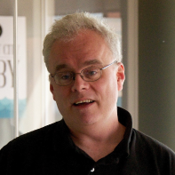
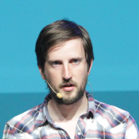
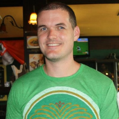
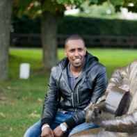

The Conference
From the very beginning we were focused on people, not on companies. Being developers ourselves we thrive to provide the ultimate experience that you'll remember. We'd like to connect awesome speakers with the willing to-learn-and-share-knowledge community. It's not only about sessions - it's about meeting with like-minded people - this can result in great ideas, is that right?
See Event Schedule RegisterSpeakers
Meet, listen and learn from the recognized leaders and experts in the industry during 3 days packed with lectures and workshops.
Zach Holman
Zach Holman is a developer living in San Francisco. He joined GitHub in 2010 as one of their first engineering hires and helped build and grow their product and culture over five years. He does a lot of public speaking about creating happy, productive software teams, and writes about the art of public speaking itself at speaking.io.
Kurt Leucht
Kurt has worked for NASA/Kennedy Space Center for 25 years, starting as a young college intern. Initially he worked as an electronics failure analysis investigator. Then he worked as a software developer and tester for several command and control systems and advisory systems. Most recently he has gotten involved in the research side of NASA, designing and developing software for robotic systems that could be used on Mars someday. Eventually Kurt will actually figure out what he wants to do when he grows up! In his spare time, Kurt works on his house and yard and he occasionally even finds time to do some woodworking.
Russ Olsen
Russ started his career doing that other kind of engineering, the sort that involves motors, gears and getting dirty. Pretty rapidly the wonder of computer programming lured Russ away, which probably explains why most of his fingers are still intact. Since turning to coding, Russ has worked on everything from 3D design and image processing software to database query engines and workflow systems. Russ is the author of two highly regarded books: The first, Design Patterns in Ruby was published in 2008 and is a complete reworking of the classic Gang of Four patterns for a modern dynamic programming language. Russ's second book Eloquent Ruby is a guide to writing idiomatic Ruby.
Reginald Braithwaite
Raganwald is proof that somewhere, a combinatory forest is missing its Idiot Bird. He suffers from an incurable and highly infectious brain syndrome that makes him enjoy programming for its own sake.
Brian Holt
Brian is currently working as a senior user interface engineer at Netflix. This means he's using JavaScript to enable your (and his) binge watching of House of Cards. Previously he worked as the director of redditgifts front end at reddit. When not on a Netflix bender or devouring content on reddit, Brian is probably hanging out with his wife and dog, running, traveling, or playing video games. Brian is presently a resident of San Francisco, CA.
Jimmy Bogard

Jimmy is a member of the ASPInsiders group, the C# Insiders group, and received the "Microsoft Most Valuable Professional" (MVP) award for ASP.NET in 2009-2015. Jimmy is also the creator and maintainer of the popular OSS library AutoMapper.
Evelina Gabasova
Evelina is a machine learning researcher working in bioinformatics, trying to reverse-engineer cancer at University of Cambridge. Outside of academia, she also speaks at developer conferences and user groups about F# and data science. She writes a blog at http://www.evelinag.com.
Dustin Whittle
Dustin Whittle is a Developer Evangelist at AppDynamics where he focuses on helping organizations manage application performance. Before joining AppDynamics, Dustin was CTO at Kwarter, a consultant at SensioLabs, and developer evangelist at Yahoo!. He has experience building and leading engineering teams and working with developers and partners to platforms. When Dustin isn’t working he enjoys flying, sailing, diving, golfing, and traveling around the world.
Adam Tornhill
Adam Tornhill is a programmer that combines degrees in engineering and psychology. He’s the founder of Empear AB where he designs tools for software analysis. He's also the author of Your Code as a Crime Scene, has written the popular Lisp for the Web tutorial and self-published a book on Patterns in C. His other interests include modern history, music and martial arts.
Ali Kheyrollahi
A distributed systems practitioner and machine learning enthusiast, Ali currently is a solution architect building web-scale solutions that handle more load than StackOverflow. A performance and scalability junkie, he loves HTTP, API design and business-modelling DDD-style. He is a Microsoft MVP, an author, blogger and OSS contributor and enjoys Natural Language Processing on Big Data and has published a couple papers in the field of Machine Vision. An interesting fact about him is that he started his career as a Medical Doctor and gave that up for the love of coding.
Phil Nash
Phil is a developer evangelist for Twilio serving developer communities in London and all over the world. He is a Ruby and JavaScript developer, blogger, speaker and occasionally a brewer. He can be found hanging out at meetups and conferences, playing with new technologies and APIs or writing open source code.
Adam Jaworski
For the last three+ years, I’ve been serving as User Experience / Design lead in ABB, a Swiss corporate leading in Automation and Power sector. I worked closely with global Digital Communications team. I was involved in several projects delivering designs, product visions, user testing research, as well as managing 8+ team of skilled designers. I am a graduate from Industrial+Organizational Psychology faculty in Kraków’s Jagiellonian University, and a guest lecturer there. Last year, I’ve been conducting User Experience and Design crash course for UJ students. And I am fascinated with everything.
Tomasz Ducin
Tomek is an advocate of modern JavaScript solutions. Experienced in both frontend and backend, he’s keen on designing interfaces and APIs for long-living enterprise systems. Tomek aims to provide a truly scalable architecture, solving both technical and organisational issues. He considers software development as a challenge of creating small and maintainable pieces of code that provide big business profit. TDD, CI, agile are also among his interests. Tomek takes part in international projects from financial and data analysis sectors, currently working in Cybercom Poland as Senior Software Consultant. After work, he makes presentations and workshops on JavaScript, Java and Python related technologies.
Gil Fink
Gil Fink is a web development expert, ASP.NET/IIS Microsoft MVP and sparXys CEO. He is currently consulting for various enterprises and companies, where he helps to develop web based solutions. He conducts lectures and workshops for individuals and enterprises who want to specialize in web development. He is also co-author of several Microsoft Official Courses (MOCs) and training kits, co-author of “Pro Single Page Application Development” book (Apress), co-organizer of GDG Rashlatz Meetup and co-organizer of ng-conf Israel.
Sharon Steed
Sharon is a content marketer and public speaker. She works with companies on identifying their ideal audience and creating content geared specifically towards who that audience is. Her clients have included financial planners, estate attorneys, startups, insurance companies and retail corporations. She speaks on marketing and communication. A life-long stutterer, she uses her speech limitation to teach audiences about the value empathy and vulnerability in business and in life.
Serg Hospodarets
Serg is a Lead Front-End Developer / Engineering Manager, lives in Dublin (Ireland). He loves Web and shares his knowledge in his blog https://blog.hospodarets.com/. Being a good in Front-End related technologies Serg is still a big fun of moving CSS further and participates specifications debates and discusses new features with the community. Usually you can find highlights of the latest additions to the browsers Dev Tools (mainly Chrome) in his twitter timeline.
Marcin Bazydlo
Dreamer. Hacker. Programmer. I worked as a researcher of REST applications replication systems (authored couple of papers which will never be cited). Then I decided that agile is much more interesting and joined OpenTable. Now I enjoy new challenges remote working for VeInteractive. I am enthusiast of stuff that works, and brilliant solutions.
Will Griffiths
Will completed a bachelor in Civil Engineering and Business Management in Australia and somehow ended up as a product owner at Lunar Logic here in Krakow. His first project was a tool for using statistics to make software estimation less painful. In his spare time, you might catch him doodling in his journal or walking his dog in Park Jordana.
Daniel Gaszewski
He is interested in software engineering and .NET platforms with over 2-years commercial experience. He combines technologies with knowledge about social science and psychology. He conducted Junior .NET Łódź group by organizing weekly programming workshops and next he was responsible for students association .NET group at Lodz University of Technology. He led in the team Binary Pancakes to provide Windows Phone app promoting knowledge about ecology and other project – game Emergency Crisis focused on experiences of medical dispatcher in a hospital. He develops projects focused on foreign languages learning – Polyglot app supporting learning words learning (TOP 10 the most innovative projects of Microsoft Imagine Cup during national finals, the idea was appreciated in Smart City Challenge Road Show competition also) and now he is working on new solution accelerating process of gathering sets of words from TV shows – Subtutor.
Tim Perry

By day Tim Perry is a technical lead and the open-source champion at Softwire, guiding teams, building a variety of great software at every scale for Softwire’s clients, and pushing Softwire to engage with and give back to the wider software development community. By night he’s a prolific open-source contributor on huge variety of projects including Sinon.JS, Moment, Knockout & Lodash, along with some of his own such as loglevel and grunt-coveralls, and is feverishly keen on all things relating to automated testing, polyglot persistence, and good old-fashioned high-quality software development.
William Brander
A professional geek, William works for Particular Software writing amazing software like NServiceBus. Passionate about the web and security, he is engaged in a sordid love affair with JavaScript, and spends most of his free time trying to convince others of it’s beauty and elegance. When not behind his laptop hacking away, this amateur beer enthusiast can often be found playing boardgames or drinking cold-brew coffee.
Karl-Henrik Nilsson
Karl-Henrik is an experienced developer and Microsoft .NET MVP that have written code for anything from cellular network base stations to websites. He is a passionate software developer at tretton37 and spends a somewhat obsessive amount of his free time building smarter devices. “If you ever need to see a man about building a smarter toaster - I’m that guy”
Mateusz Tarnaski
Mateusz Tarnaski (or just Tarnas) is a software developer who thinks that technical skill is second to ability to organize the code in simple and easy to understand manner. With that in mind, day after day he tries to reach ever simpler, more straightforward solutions to problems set before him. Is currently trying to get his head around the responsibilities coming with the great power of dynamic languages after switching his main technology stack from C# to JavaScript. When not coding or reading he enjoys video games as much as the next guy, hikes on a regular basis and can’t wait till the first snow to go snowboarding!
Tugberk Ugurlu
Coder, software architecture master, continuous delivery believer, speaker, blogger, author, full-time learner, question asker. A few words that could give you a hint on who I am. I could go on and on but as they say: talk is cheap, show me the {insert-what-you-want-to-see}. So, see my code, read my posts, look at my community activity, question my answers and answer my questions, watch my talks, judge my career and most importantly retweet my tweets (especially the ones that involve cat pictures).
Uri Shaked
Uri Shaked is a Google Developer Expert for Web Technologies. He created the popular angular-moment open source module and regularly speaks about Web and IoT-related technologies in conferences and meetups. Among his interests are reverse engineering, hardware hacking, building 3d-printed robots and games, playing music and Salsa dancing.
Sebastian Belczyk

Sebastian is a software craftsman always looking for better tools and ways to challenge his point of view. He’s always keen to share his experience, insight and knowledge. He’s an active member of the software craftsmanship movement (Code retreat facilitator) and programmers community (conference and meetup speaker). His vivid interest in various technologies, languages and practices reflects his belief that even most difficult problems can be solved easily if you choose the right tools.
Niall Merrigan
Niall Merrigan is an Irish guy who managed to end up in Norway after finding out the country existed when he was in New Zealand. He works for Capgemini in Stavanger, Norway, as the head of custom software development and has been a Microsoft ASP.NET MVP since 2010. He is also involved in the Friends of Redgate program and is a general rugby nut (which means he shouts a lot). Niall has a passion for web technologies, security, and whiskey, which can lead to some interesting discussions.
Sam Elamin
Sam Elamin is a software developer at JustEat as well as a Software Craftsman and DDD evangelist. Sam is interested in TDD,Metrics Driven Development, Continuous Delivery and is currently exploring Event Sourcing,as as well as DevOps tools like StatsD, Graphite, Grafana and the ELK stack.
Verena Brodbeck
Former physician and neuroscientist, discovered late in life that web programming is the hidden professional dream designation. After career switch 3 years ago, now happily employed frontend developer and JavaScript apprentice. Also music lover and wanna be chef - in a next life.
Jose Dominguez
Full stack dev, end user development advocate, and free and open source fan.
Schedule
-
-
15 Sep 9:00 AM 9:15 AM
Opening Session
Greetings from the organizers!
15 Sep 10:00 AM 10:25 AMCoffee break
15 Sep 11:10 AM 11:35 AMCoffee break
15 Sep 12:20 PM 13:35 PMLunch break
15 Sep 14:20 PM 14:45 PMCoffee break
15 Sep 15:30 PM 15:55 PMCoffee break
15 Sep 16:40 PM 17:05 PMCoffee break
-
15 Sep 11:10 AM 11:35 AM
Coffee break
15 Sep 12:20 PM 13:35 PMLunch break
15 Sep 14:20 PM 14:45 PMCoffee break
15 Sep 15:30 PM 15:55 PMCoffee break
-
15 Sep 11:10 AM 11:35 AM
Coffee break
15 Sep 12:20 PM 13:35 PMLunch break
15 Sep 14:20 PM 14:45 PMCoffee break
15 Sep 15:30 PM 15:55 PMCoffee break
-
-
-
16 Sep 8:50 AM 9:00 AM
Opening Session
Greetings from the organizers!
16 Sep 9:45 AM 10:10 AMCoffee break
16 Sep 10:55 AM 11:20 AMCoffee break
16 Sep 12:05 PM 13:20 PMLunch break
16 Sep 14:05 PM 14:30 PMCoffee break
16 Sep 15:15 PM 15:40 PMCoffee break
16 Sep 16:25 PM 16:50 PMCoffee break
-
16 Sep 10:55 AM 11:20 AM
Coffee break
16 Sep 12:05 PM 13:20 PMLunch break
16 Sep 14:05 PM 14:30 PMCoffee break
16 Sep 15:15 PM 15:40 PMCoffee break
-
16 Sep 10:55 AM 11:20 AM
Coffee break
16 Sep 12:05 PM 13:20 PMLunch break
16 Sep 14:05 PM 14:30 PMCoffee break
16 Sep 15:15 PM 15:40 PMCoffee break
-
Workshops
For those interested in getting their hands dirty with more practical things, we set up pre-conference workshops. They are planned for 14th September 2016 and last for a full day.
14 September 2016React + Redux
Surely by now you have heard the buzz surrounding Facebook’s React. More and more people and companies are using it to build largescale production apps (including at Netflix). Brian Holt guides attendees through an overview of React. In this training, attendees will go from knowing nothing (or very little) about React to building a whole app using React and Redux. React has some neat bells and whistles, like virtual DOM and the speed at which it can render content to the DOM and update it thereafter. However, these are not the most compelling reasons to use React. React introduced some fundamental concepts to the frontend development world, chief among them declarative components and oneway data flow. Brian outlines how you can take these concepts and apply them to any code you’re writing. In addition to covering how to write user interfaces using React, Brian will explore managing data using Redux. Redux is a great library from Dan Abramov that makes managing data stores very simple. We will discuss how to use Redux to make Fluxlike stores.
As a bonus, Brian will give a brief treatise on universal rendering with Node.js using React and a discussion of what is new in the React community.
Internet of Things - Build It
Hands-on workshop for building connected IoT electronic devices. The Internet of Things (IoT) is the network of physical objects or “things” embedded with electronics, software, sensors, and network connectivity, which enables these objects to collect and exchange data (Wikipedia). As of today, there are more than 20 billion connected devices, including smart cars, wearable devices, connected agriculture and medical devices, and more.
In this workshop, we will learn how to build our own IoT connected devices. We will start with some electronics fundamentals, learn about the Arduino and the Raspberry Pi platforms and the different connectivity options, and even get some handson experience with building our own devices. Each participant will create several of Arduino projects, starting from a simple “Hello World” program, and advancing to build a fully functional twitter connected “Simon Says” game with physical buttons and LEDs.
No prior electronics or hardware project is assumed, and hardware kits will be provided.
Building Scalable JavaScript Apps
Building and maintaining large and scalable JavaScript web apps isn’t easy. So how do you build such things without being driven to madness? Using and combining proven JavaScript patterns will do the trick. In this oneday workshop, we’ll discuss the patterns behind some of the largest JavaScript apps, such as Gmail and Twitter, and we’ll explore how to apply them in your own apps. We’ll start from object patterns and then focus on module patterns, promises, timers, and more.
Gil FinkCommunity partners
Do you lead a community that you think would benefit from a partnership with DevDay? If you also think that spreading DevDay love is a good thing, then you might be interested in becoming a community partner.
Contact usRegister now
Everything that's included in a Conference and a day of pre-conference workshops on 14th September. Early price limited to 5 registrations per workshop.
Proceed to registrationTwo full days of the conference on 15-16th September. It includes two days of sessions and fun. Early price limited to 50 registrations.
Proceed to registration